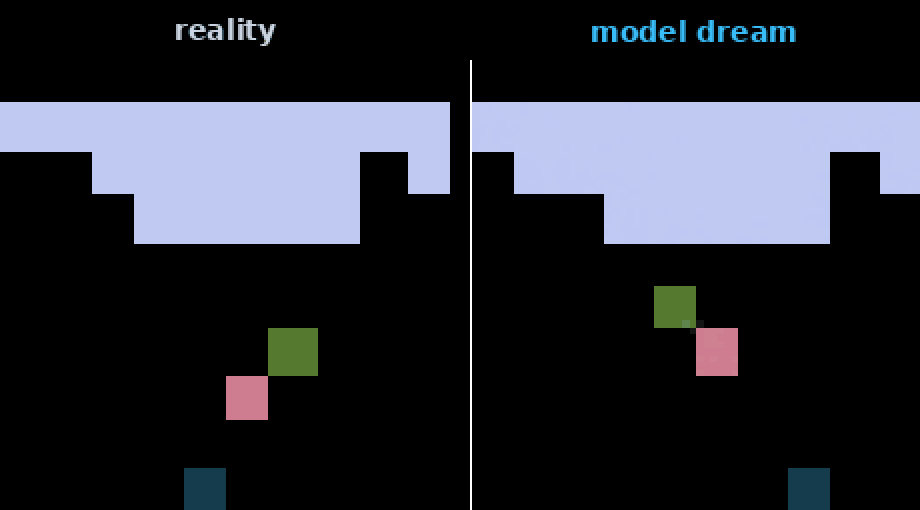
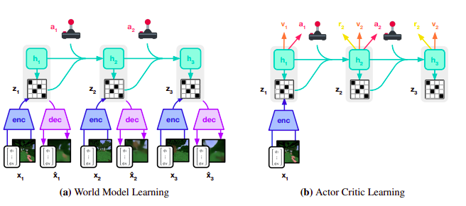
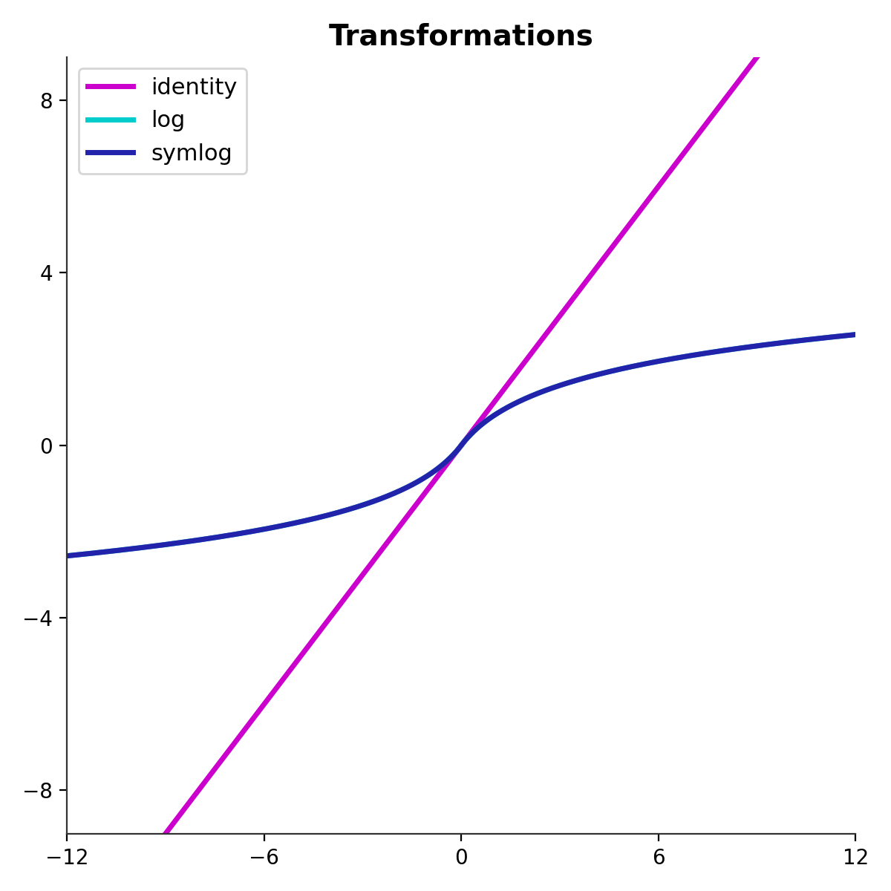
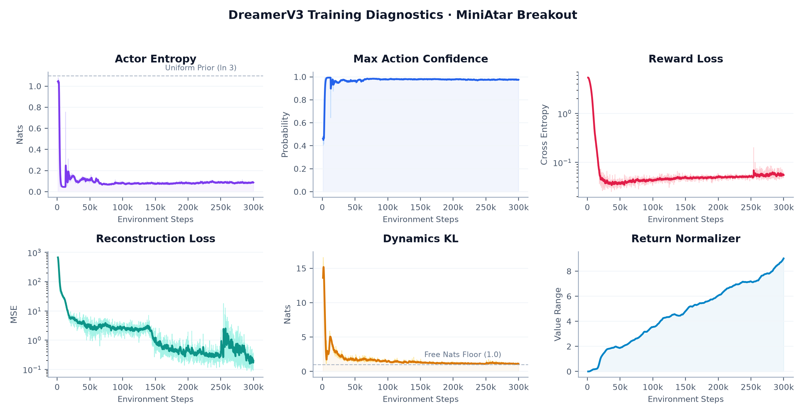
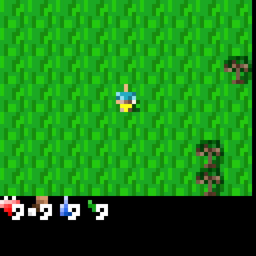
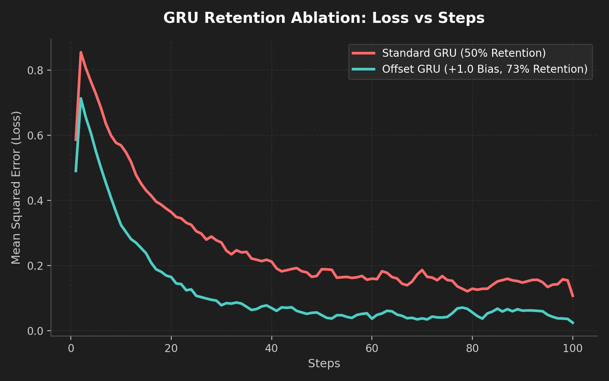
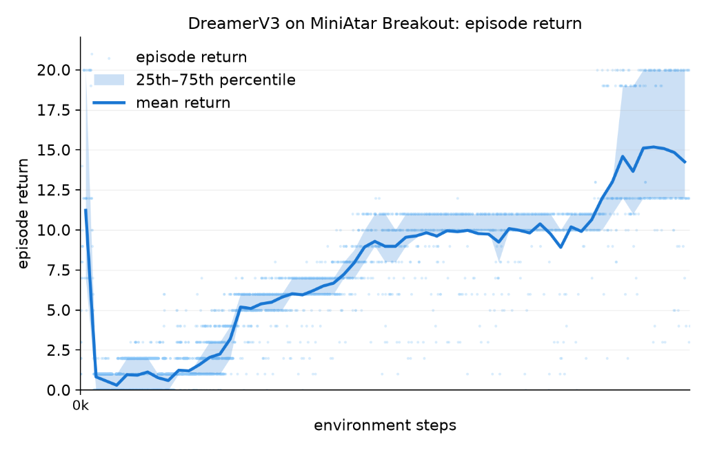
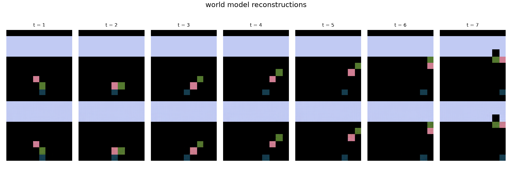
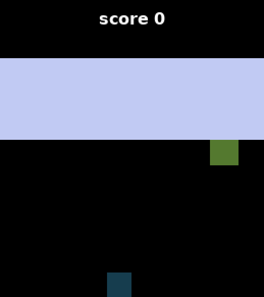
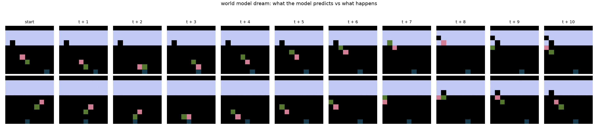

1 Why I Built This
In the last blog I talked about DreamerV2 and how it was the first world model agent to achieve human level performance on Atari. But the problem was that DreamerV2 was still heavily configured around Atari. If you moved an agent tuned for Atari to environments with completely different dynamics or reward scales, it would likely struggle unless you adjusted the hyperparameters all over again.

This is what DreamerV3 was trying to solve. The goal was to build a general algorithm that could work across different environments with one stable configuration, without excessive hyperparameter tuning or changing network layers. DreamerV3 was able to learn across more than 150 different tasks with that single fixed setup, while also outperforming specialized methods across a wide range of benchmarks. One of the most interesting results was Minecraft, where it was able to collect diamonds from scratch without human gameplay data or extra help for the task.
I am honestly amazed that they came up with this and actually got it to work at this scale. It was a preprint in 2023 and was eventually published in Nature in 2025, which is a pretty big deal for a world model paper.
So, I wanted to take it up a notch and actually implement the DreamerV3 paper from scratch in JAX.
This post is going to be quite different from the previous ones. I will not re-explain the entire paradigm again because V3 builds on years of research from World Models, PlaNet, DreamerV1, and DreamerV2. If you have not read those posts, I strongly recommend going through them first.
Instead, I am going to focus on what changed in V3 and what happened when I implemented it. This has been my hardest paper implementation yet, harder than anything I have done before. I used MinAtar Breakout to validate the architecture, and this is where things got interesting. The logs and losses could look completely normal while something inside the model was already broken. I am going to explain the bugs that cost me days of debugging, and what finally got the agent running.
2 What Changed
DreamerV3 did not introduce a fundamentally new paradigm. The actor critic, recurrent state space model, encoder, decoder, and all the other main components that make up the Dreamer lineage are still here. What changed was the reward scaling, losses, KL balancing, and network components like Block GRU, RMSNorm, and SiLU activations. These are all stability improvements, and they are exactly what V1 and V2 were missing. With them, DreamerV3 becomes robust across 150+ tasks without reconfiguring.
I also want to note that the naming conventions between the papers are a bit confusing. In V2 we had the Representation Model, which was the posterior, and the Transition Model, which was the prior. Then in the V3 paper they started calling them the Encoder and the Dynamics Predictor. Just note that in case you get confused reading the papers.

The core RSSM equations are the same as V2, so I will not re-derive them. Here they are for reference:
Sequence Model: $h_t = f(h_{t-1}, z_{t-1}, a_{t-1})$
Encoder (Posterior): $z_t \sim q(z_t \mid h_t, x_t)$
Dynamics Predictor (Prior): $\hat{z}_t \sim p(\hat{z}_t \mid h_t)$
Reward Predictor: $r_t \sim p(r_t \mid h_t, z_t)$
Continue Predictor: $c_t \sim p(c_t \mid h_t, z_t)$
Decoder: $\hat{x}_t \sim p(\hat{x}_t \mid h_t, z_t)$
I am going to focus on what these new changes actually do and the problems they were trying to solve.
Unimix
The first change is about preventing the categorical distributions from collapsing. A distribution of 1% uniform and 99% neural network output was added in two places. For the latent states, it stops the categorical distributions from becoming completely deterministic. It is also applied to the actor's policy probabilities, because we want the agent to keep exploring different actions and not completely shut off any option.
Instead of allowing the network to put all of its probability on one category, a small amount of probability is always mixed back into every category.
probs = jax.nn.softmax(logits, axis=-1)
probs = probs * 0.99 + 0.01 / nUnimix handles the categorical distributions, but the KL loss itself also needs a floor to prevent over-optimization.
Free Nats and KL Balancing
Free nats actually go back to PlaNet. In V2, KL balancing contained two terms with different weights, with the prior being pushed more strongly toward the posterior. V3 changes the weights to 1.0 for the dynamics term and 0.1 for the representation term. More importantly, it applies a 1.0 nat floor separately to each KL term after summing over the categorical variables.
Once the KL is small enough, there is no reason to keep forcing it toward zero. The model can spend that capacity learning things that actually matter.
$$\mathcal{L}_{\text{dyn}} = \max\!\bigl(1.0,\; \text{KL}\bigl[\text{sg}(q) \,\|\, p\bigr]\bigr)$$
$$\mathcal{L}_{\text{rep}} = \max\!\bigl(1.0,\; \text{KL}\bigl[q \,\|\, \text{sg}(p)\bigr]\bigr)$$
dynamics_loss = jnp.maximum(
free_nats,
categorical_kl(
sg(post_logits_mixed),
prior_logits
).sum(-1)
)
rep_loss = jnp.maximum(
free_nats,
categorical_kl(
post_logits_mixed,
sg(prior_logits)
).sum(-1)
)With the KL stabilized, the next problem is the reward signal itself. Different environments can produce rewards at completely different scales, and this is where the most important change in the paper comes in.
Symlog and Two-Hot Encoding
Losses like mean squared error are too sensitive to large values. A large target can produce a huge error and therefore huge gradients. L1 loss avoids that dependence on the size of the error, but it does not give the same scale independent behaviour that DreamerV3 needs. So what did they do? They introduced symlog and symexp, where symexp is the inverse of symlog.
$$\text{symlog}(x) = \text{sign}(x) \cdot \ln(|x| + 1)$$
$$\text{symexp}(x) = \text{sign}(x) \cdot (e^{|x|} - 1)$$

There is a distinction in where both of them are applied. DreamerV3 uses symlog on vector observations, both when they enter the encoder and when the decoder predicts them. For image-based environments, this compression is not needed because the pixels are already bounded, so that path can be safely skipped. For the reward predictor and critic, they use a two-hot categorical distribution with 255 exponentially spaced bins.
Instead of directly predicting a number, the network predicts probabilities over these bins. The two closest bins are used for the target, and the final prediction is the probability weighted average of the bin values.
def make_bins(v_min=-20.0, v_max=20.0, n_bins=255):
half = jnp.linspace(
v_min, 0,
(n_bins - 1) // 2 + 1
)
half = symexp(half)
bins = jnp.concatenate(
[half, -half[:-1][::-1]], 0
)
return binsThis is where the idea becomes really interesting. The categorical loss depends on the probabilities assigned to the bins rather than directly on the continuous values represented by those bins. This decouples the gradient magnitude from the signal scale. So a reward of 1000 in one environment and a reward of 0.01 in another end up producing roughly the same sized gradient, because the network is just assigning probabilities to bins rather than regressing onto raw numbers. That single property is what makes one configuration work everywhere.
So now the gradients are independent of the reward scale. But the critic still has its own stability problem, because it is constantly learning from value targets that are also changing.
Slow Critic, RepVal, and Zero Init
DreamerV3 makes a few changes to stabilize the critic. First, the output layers of the reward and critic heads are initialized to zero. The model starts with no opinion about the value or reward, which prevents large random gradients early on.
Second, they keep an Exponential Moving Average of the critic with a rate of 0.02. The slow critic is used as a regularizer rather than as the bootstrap target for the imagination loss. This gives the critic a more stable reference instead of allowing its predictions to move completely freely.
new_state[slow_key] = (
tau * state[k] +
(1 - tau) * state[slow_key]
)Finally, the replay value loss, RepVal, adds another critic loss using states from the real replay buffer. The default scale for this loss is 0.3.
The last stability change is in how the advantages are normalized.
Percentile Return Normalization
Previous works used standard deviation to normalize the advantage, but this becomes a problem when the returns have very little variation, especially before the agent finds a sparse reward. The spread can become extremely small, so dividing by it can amplify noise.
DreamerV3 calculates the 5th and 95th percentiles of the returns and uses their difference as the scale. A minimum value of 1.0 is applied so the denominator cannot become too small.
$$S = R_{95} - R_5$$
$$A_t = \frac{R_t - V(s_t)}{\max(1,\; S)}$$
ret_perc = jnp.percentile(
ret.ravel(),
jnp.array([5.0, 95.0])
)
new_ret_norm = (
ret_perc[1] - ret_perc[0]
) * decay + ret_norm * (1 - decay)
adv = sg(
(ret - target_values) /
jnp.maximum(1.0, ret_norm)
)When a rare reward finally appears, the advantage needs to be large enough for the agent to care about it, but it also cannot be allowed to explode because the returns barely changed before that point. This is one of the changes that makes surviving the reward dip possible. The agent has to keep exploring even when rewards are extremely sparse instead of getting stuck repeatedly visiting states it already knows. This is what allowed DreamerV3 to collect diamonds in Minecraft from scratch, without human data or a manually designed curriculum.
Those are the changes on paper. Now let me talk about what happened when I actually tried to implement all of this.
3 The Bugs That Don't Crash
Implementing DreamerV3 correctly took weeks of resilience. These were some of the standout bugs I encountered, the solution and the impact of fixing them. Some of the early failures were loud, NaNs and collapses that at least told me something was wrong. The bugs that nearly ended the project were the silent ones. All my losses were healthy but you still cant figure out why the agent isn't breaking out.

I had to rewrite the architecture 2 times and make sure I wasn't missing anything that Danijar Hafner mentioned in the paper. I also tried to explore some things out of curiosity. The experiments failed badly, but a good friend of mine once told me that just trying is enough. It doesn't have to work, just try! Trying is all you need. They are described below:
1. Mean vs Sum Reduction
The agent was moving randomly even though the loss curves looked completely healthy. The world model's KL divergence had plummeted to the exact free nats floor and flatlined. It turned out I used a mean reduction instead of a sum reduction on the image reconstruction loss. I was basically dividing the image gradient by a massive factor of 12,288. The world model was not learning to reconstruct the image at all, it was just predicting a blurry gray mess, so the actor was flying completely blind.
# The bug:
recons_loss = optax.l2_loss(recons_obs, _obs).mean(-1)
# The fix:
recons_loss = optax.l2_loss(recons_obs, _obs).reshape(
*r_seq[1:].shape, -1
).sum(-1) ## breakthrough....:)Once the reconstruction loss was actually flowing, the world model started learning. But that opened up new questions about what else might be wrong.
2. Continue Head Initialization
At one point I was convinced that the Continue head was ruining the imagined rollouts. If you initialize a standard MLP, the biases start at zero, so the output sigmoid is balanced at 0.5. I reasoned that the agent was born believing every episode had a 50/50 chance of ending at every step, which limits its planning horizon to just two steps.
I was ready to hardcode a heavy bias initialization just to force the agent to explore. But I dug into Hafner's reference code and realized that it ships with a zero initialization anyway. For environments like Breakout, the gradients are strong enough that the network learns the true episode length almost instantly. I left it at zero. The bug was entirely in my head.
The contrast with the GRU gate in Experiment 2 is interesting: same suspicious math, opposite verdicts, because the continue head gets corrected every single step while the recurrent memory has to be right from the start.
With that paranoia behind me, I moved on to something that turned out to be much worse.
3. Action Alignment
In an RSSM, the prior state depends on the previous action. In my replay buffer sampling, I accidentally fed the network the current action aligned with the current observation. Neural networks are exceptional at finding loopholes, so the model quietly co-adapted and learned to cheat by looking at the current action to predict the current observation. The worst part is it had a working score, so the agent was learning something, but the dynamics model was not causal at all. One index shift fixed it.
# The bug: feeding current action with current observation
post, _ = rssm.observe(embed, action)
# The fix: shifting actions so the prior depends on the previous action
prev_action = jnp.concatenate(
[jnp.zeros_like(action[:, :1]), action[:, :-1]], axis=1
)
post, _ = rssm.observe(embed, prev_action)The co-adaptation bug took the longest to find because the agent was literally scoring points while the world model was fundamentally broken underneath.
4. Variable Shadowing
JAX is beautiful until you accidentally shadow a variable. I reused the initial state's name as the loop carry during the imagination scan. Instead of persisting the proper recurrent state across the rollout, I was accidentally writing the terminal state into the first slot of my trajectory buffer. It was silently corrupting the very first step of every single imagined trajectory.
# The bug: shadowing the carry variable
def body(h0, x):
h0 = rssm.step(h0, x)
return h0, h0
# The fix: separating the carry from the output state
def body(carry, x):
h_next = rssm.step(carry, x)
return h_next, h_nextAfter fixing those four bugs, the agent was finally converging cleanly. That gave me room to run two experiments I had been curious about.
Experiment 1: Rollout Slicing
During an earlier stretch of this project I was running DreamerV3 on Crafter.

At some point I tried to cut imagination compute by seeding rollouts from only the last 8 states of each training sequence, 128 starts instead of 1024. I assumed that the future states would have more information and less noise since the later states are better than the early ones.
On Breakout this didn't really make a difference. But on Crafter it was very bad. I trained Crafter for 1 million steps and it didn't have the normal performance of a 1 million step run. The agent was getting 8x less gradients during imagination. The agent was not able to learn the beginning well, so it could not utilize the last 8 states anyway. It happened like this because Crafter is extremely hard. It tests true intelligence, the agent has to survive zombies, live through different times (day and night), eat and so on to survive.
My hypothesis is that the agent can still converge if given enough steps, maybe 8 million, it can still reach what the full 1024-start version reaches in 1 million. This is something probably worth looking into in the future. In the repo I flattened all states because there was no reason to keep the experiment.
Experiment 2: GRU Retention Bias
I found out that my GRU was retaining information by 50% and found out that there is a classic deep learning trick for it that traces back to early recurrent architecture research. Adding a +1.0 bias (in my keep-gate convention) makes the agent remember 73% of information from the past at every timestep, a steal.
# Standard GRU keep gate (50% retention)
z = jax.nn.sigmoid(z_logits)
# The 73% retention trick
z = jax.nn.sigmoid(z_logits + 1.0)This is not really important for games like MinAtar Breakout, but for games like Crafter and Minecraft that are very long horizon, you need the agent to remember information very well for true generalization.
To sanity check it, I ran a tiny toy task with and without the offset. The curves came out nearly identical, which is exactly what I should have expected, because a short dense task doesn't need long memory. The real argument is simpler than any training run. At initialization, a standard keep gate retains 50% of its state each step, so after 15 steps of imagination a signal from the start has decayed to about 0.003%. With the offset it retains 73%, leaving about 1.2%. That is over 400 times more of the past surviving a single rollout, compounding at every step. On Breakout, nothing needs to survive that long. On Crafter, where the agent has to remember where it left things for hundreds of steps, I suspect this is the difference between memory and amnesia. That part I have not tested on a real game, but it is the first thing I would test if I take this to a longer environment.

4 The Results
I used Crafter for a lot of the heavy experiments, but after fixing all those core bugs, I just wanted a fast, clean baseline to prove the whole architecture was finally locked in. I trained the final agent on MinAtar Breakout for 300,000 steps. MinAtar environments are not really beautiful, they are just basic grids, but they are perfect to prove that the math actually works.

The agent hit a mean score of 14.76 with a standard deviation of 3.97, evaluated with a greedy argmax policy over 100 evaluation episodes. For context, a random policy on MinAtar Breakout scores around 1 to 2, and a standard model-free agent like DQN scores around 10 after 1 million steps, with stronger variants like QR-DQN and C51 reaching 14 to 16. So a world model agent reaching 14.76 in just 300,000 steps, matching distributional DQN variants at a fraction of the environment interactions, is a solid result. As you can see from the curve, once the bugs were cleared out, it just converged smoothly.
World Model Reconstructions
The first thing I needed to check was whether the world model was actually seeing the environment, or if it was still predicting that blurry gray mess.

The decoder actually learned to compress and uncompress the pixels well. The ground truth observation matches the reconstructed observation perfectly. It knows exactly where the bouncing pixel, the paddle, and the blocks are.
Playing vs. Dreaming
This is where the Dreamer architecture becomes really interesting.

This first gif is the agent actually playing the real Breakout environment. It is selecting actions and getting real observations from the game engine.

This shows a complete hallucination. The agent is predicting the future entirely inside its own neural network. It is imagining the pixel's trajectory, the paddle movement and the blocks without ever touching the real environment. The world model is so stable it can dream up a perfectly coherent game state and train its actor critic entirely inside its own head.
5 Conclusion
Yeah, and that is it. This is DreamerV3.
I hosted the full code on GitHub and I intentionally wrote it in a minimal, easy to understand format. I finally stabilized it after two full rewrites, and I have learned a lot from this project both theoretically and technically. It feels good to finally see it work.
The journey has been really interesting. I have now covered the Dreamer lineage, starting from Ha and Schmidhuber, to PlaNet, DreamerV1, DreamerV2, and now DreamerV3. I don't know what comes next, but I will keep studying world models. It is a truly beautiful paradigm.
I hope this was worth a read. If you have any questions or suggestions, please reach out to me on @ojbaby_11.
References
- Ha, D. & Schmidhuber, J. (2018). World Models. arXiv:1803.10122.
- Hafner, D., Lillicrap, T., Fischer, I., Villegas, R., Ha, D., Lee, H. & Davidson, J. (2019). Learning Latent Dynamics for Planning from Pixels. ICML 2019.
- Hafner, D., Lillicrap, T., Ba, J. & Norouzi, M. (2020). Dream to Control: Learning Behaviors by Latent Imagination. ICLR 2020.
- Hafner, D., Lillicrap, T., Norouzi, M. & Ba, J. (2021). Mastering Atari with Discrete World Models. ICLR 2021.
- Hafner, D., Pasukonis, J., Ba, J. & Lillicrap, T. (2025). Mastering Diverse Domains through World Models. Nature.
- Young, K. & Tian, T. (2019). MinAtar: An Atari-Inspired Testbed for Thorough and Reproducible Reinforcement Learning Experiments. arXiv:1903.03176.